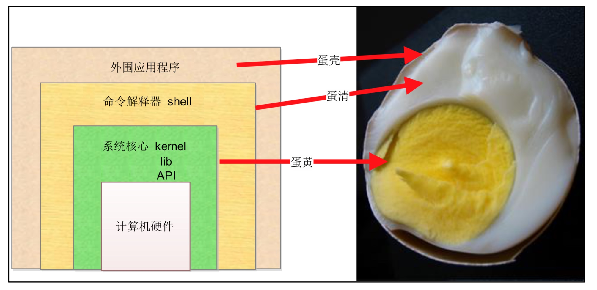
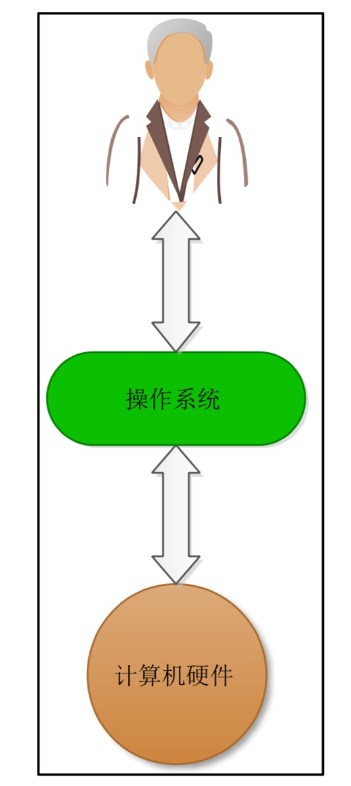
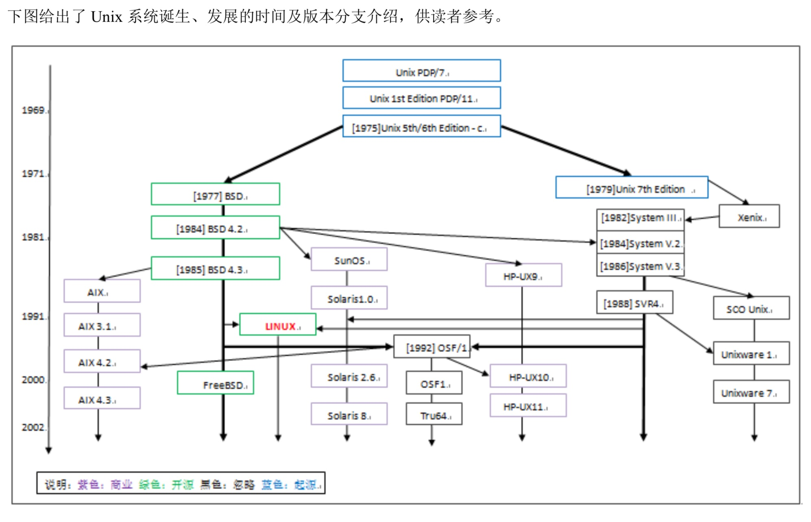
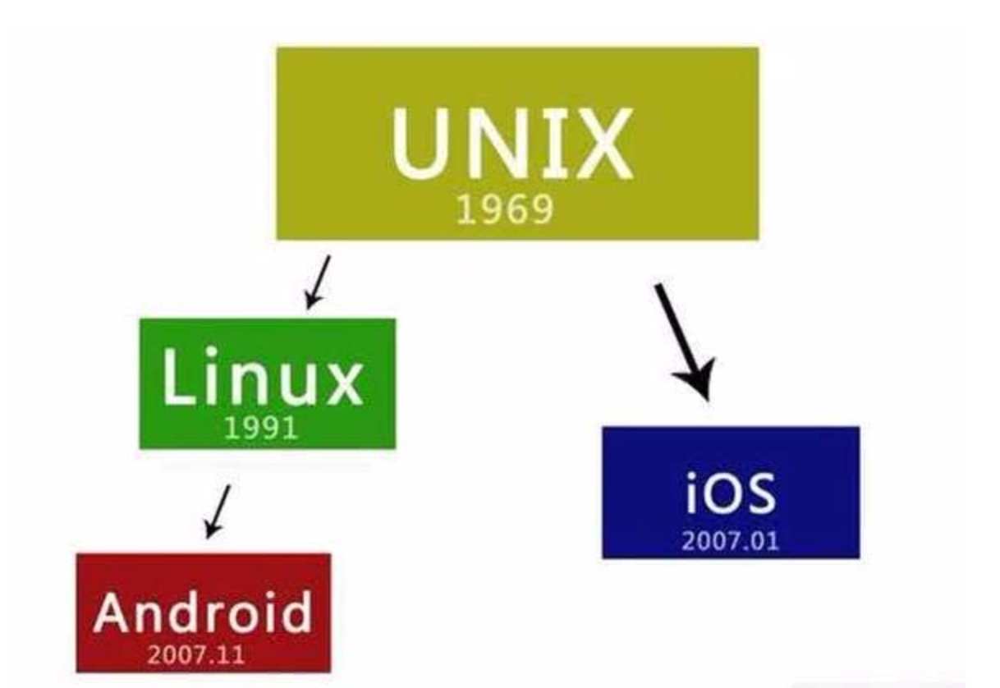
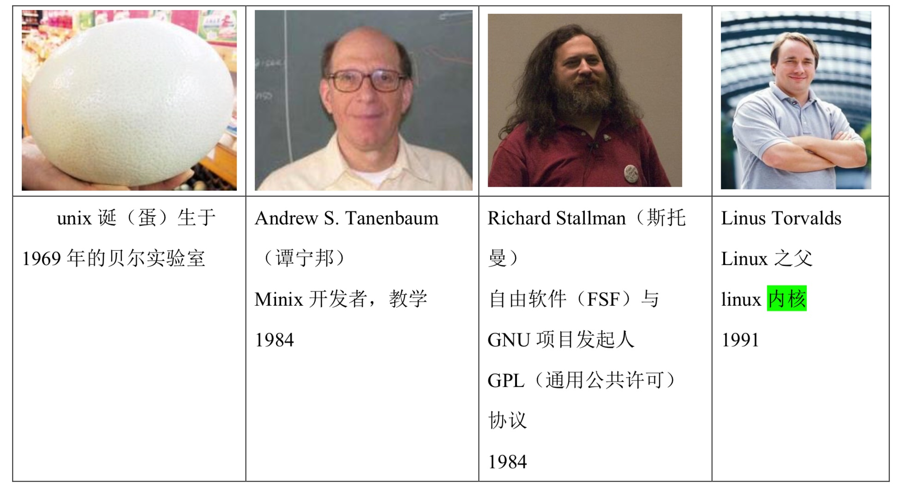
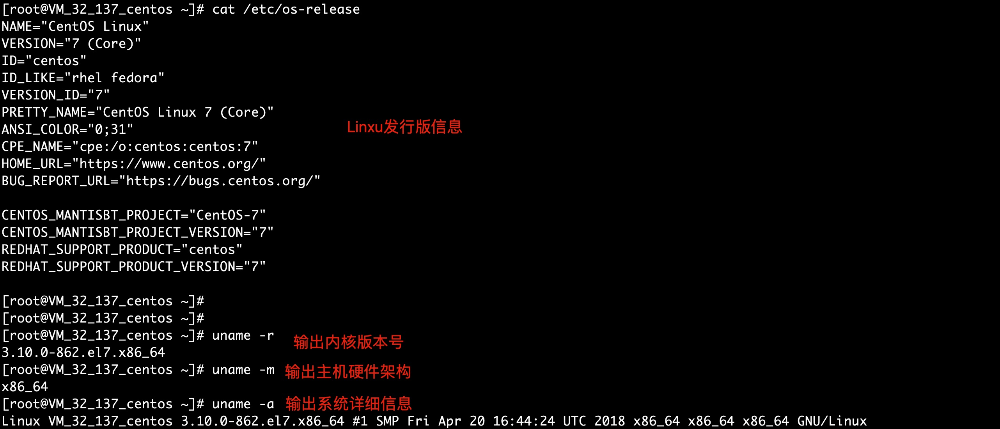
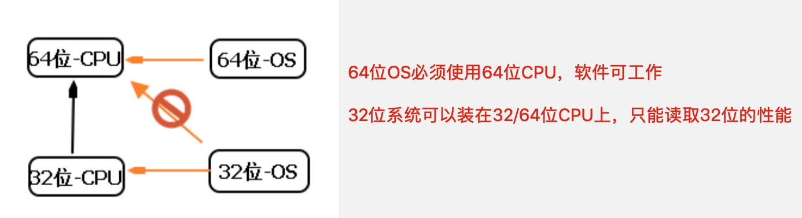

LINUX 系统介绍与环境搭建准备
什么是操作系统
操作系统：是一个人与计算机硬件的中介。
没有用的砖头===>可以玩的砖头。
操作系统，英文名称 Operating System，简称 OS，是计算机系统中必不可少的基础系统软件，它是 应用程序运行以及用户操作必备的基础环境支撑，是计算机系统的核心。
操作系统的作用是管理和控制计算机系统中的硬件和软件资源，例如，它负责直接管理计算机系统 的各种硬件资源，如对 CPU、内存、磁盘等的管理，同时对系统资源供需的优先次序进行管理。
操 作系统还可以控制设备的输入、输出以及操作网络与管理文件系统等事务。
同时，它也负责对计算 机系统中各类软件资源的管理。例如各类应用软件的安装、运行环境设置等。下图给出了操作系统 与计算机硬件、软件之间的关系示意图。

操作系统就是处于用户与计算机硬件之间用于传递信息的系统程序软件。
操作系统在接收到用户输入后，将其传递给计算机系统硬件核心进行处理，然后再讲计算机硬件的处理结果返回给用户。

常见操作系统
目前 PC(Intel x86 系列)计算机上比较常见的操作系统有 Windows、Linux、DOS、Unix 等。
windows
MicrosoftWindows操作系统是美国微软公司研发的一套操作系统，它问世于1985年，起初仅仅是Microsoft-DOS模拟环境，后续的系统版本由于微软不断的更新升级，不但易用，也当前应用最广泛的操作系统。
Windows采用了图形化模式GUI，比起从前的Dos需要输入指令使用的方式，更为人性化。
随着计算机硬件和软件的不断升级，微软的 Windows也在不断升级，从架构的16位、32位再到64位,系统版本从最初的 Windows1.0到大家熟知的 Windows95、 Windows98、 Windows2000、 Windows XP、 Windows Vista、 Windows7、Windows8、Windows8.1、Windows 10和 Windows Server服务器企业级操作系统，不断持续更新，微软一直在致力于Windows操作系统的开发和完善。
优点：占据个人电脑操作系统大部分市场（除了IT以外），应用多，美观，娱乐性强，在服务器领域也有windows部分市场。
缺点：专业版收费，系统占用资源多，易中毒，安全性较低。
macos
macOS（OS X 2016年改名为 macOS）是苹果公司开发的图形用户界面操作系统，为苹果 Macintosh 电脑专属，自 2002 年起在所有的 Mac 电脑上预装。
优点：界面美观、用户体验很好。
缺点：系统收费（等于买macbook送系统），更像Linux，小白使用起来稍有难度。
Linux
目前全球服务端操作系统主要是Linux，也占据部分IT人员的个人电脑系统（ubuntu）。
Linux系统有N多分支，如centos，redhat，ubuntu，Android（安卓系统）
优点：系统稳定，资源低消耗，安全性更高，适合专业IT人员，开放源代码（不是免费）。
缺点：需要专业性学习后方可使用。（也有很多的图形化版系统，如桌面版ubuntu，其实macos也是linux的一种）
什么是Linux
Linux类似Windows，也就是款操作系统软件
Linux是一套开放源代码程序的、可以自由传播的类Unix操作系统软件，且支持多用户、多任务且支持多线程、多CPU的操作系统。
Linux主要用在服务器端、嵌入式开发和个人PC桌面中，服务器端是重中之重。
我们熟知的大型、超大型互联网企业(百度，Sina，淘宝等)都在使用 Linux 系统作为其服务器端的程序运行平台，全球及国内排名前十的网站使用的主流系统几乎都是 Linux 系统。
从上面的内容可以看出，Linux 操作系统之所以如此流行，是因为它具有如下一些特点:
- 是开放源代码的程序软件，可自由修改;
- Unix系统兼容，具备几乎所有Unix的优秀特性;
- 可自由传播，无任何商业化版权制约;
- 适合 Intel 等 x86 CPU 系列架构的计算机，可移植性很高
Unix的历史
Unix系统在1969年的AT&T的贝尔实验室诞生，20世纪70年代，它逐步盛行，这期间，又产生 了一个比较重要的分支，就是大约 1977 年诞生的 BSD(Berkeley Software Distribution)系统。
从BSD 系统开始，各大厂商及商业公司开始了根据自身公司的硬件架构，并以 BSD 系统为基础进行Unix 系统的研发，从而产生了各种版本的 Unix 系统
- SUN公司的Solaris
- IBM公司的AIX
- HP公司的HP UNIX

在上图中可以看到，本章的“主人公”Linux 系统，诞生于 1991 年左右，因此，可以说 Linux 是从 Unix 发展而来的。
Unix的五大优势
- 技术成熟、可靠性高
- 可伸缩性，Unix 支持的 CPU 处理器体系架构非常多，包括 Intel/AMD 及 HP-PA、MIPS、PowerPC、UltraSPARC、ALPHA 等 RISC 芯片，以及 SMP、MPP 等技术。
- 强大的网络功能，Internet 互联最重要的协议 TCP/IP 就是在 Unix 上开发和发展起来的。此外，Unix 还支持非常多的 常用的网络通信协议，如 NFS、DCE、IPX/SPX、SLIP、PPP 等。
- 强大的数据库能力，Oracle、DB2、Sybase、Informix 等大型数据库，都把 Unix 作为其主要的数据库开发和运行平台， 一直到目前为止，依然如此。
- 强大的开发性，促使C语言诞生
Unix操作系统的革命
- 70 年代中后期，由于各厂商及商业公司开发的 Unix 及内置软件都是针对自己公司特定硬件的，因此在其他公司的硬件上基本上无法直接运行。
- 70年代末，Unix又面临了突如其来的被AT&T回收版权的重大问题，特别是要求
禁止对学生群体提供Unix系统源码。 - 在80年代初期，同样是之前Unix系统版权和源代码限制的问题，使得大学授课Unix系统束缚很多，因此，一位名为
Andrew Tanenbaum（谭宁邦）的大学教授为了教学开发了Minix操作系统。 - 1984年，Richard Stallman斯托曼发起了
开发自由软件的运动，且成立自有软件基金会（Free Software Foundation，FSF）和GNU项目
GNU项目
当时发起这个自由软件运动和创建 GNU 项目的目的其实很简单，就是想开发一个类似 Unix 系统、 并且是自由软件的完整操作系统，也就是要解决 70 年代末 Unix 版权问题以及软件源代码面临闭源的问题，
这个系统叫做
GNU 操作系统。这个 GNU 系统后来没有流行起来。现在的 GNU 系统通常是使用 Linux 系统的内核， 以及使用了GNU项目贡献的一些组件加上其它相关程序组成，这样的组合被称为
GNU/Linux操作系统。

Linux系统诞生
看过linus的采访片，他说自己是宅男代表，希望成为爱迪生那样的人，脚踏实地，天才是%1的灵感加上99%的汗水，这句话能给与我们力量。
并且他开发linux是为了自己的研究，开源后，没想到后来火遍全世界，到后来全世界的开发者都有参与到linux源码的维护中，难以管理，他又开发出了git去管理linux的源码。
然后git又火遍了全世界，猿来这就是大佬吗。
Linux 系统的诞生开始于芬兰赫尔辛基大学的一位计算机系的学生，名字为 Linus Torvalds。
Linux 的标志和吉祥物为一只名字叫作Tux的企鹅——Torvalds’Unix，下图所示。
Linux Torvalds 林纳斯·托瓦兹1988年进入赫尔辛基大学选读计算机科学，他在学校接触到Unix这个操作系统，当时的Unix只提供16个终端，早期的计算机只有运算功能，终端提供输入输出，光是等待Unix的时间就很长，林纳斯这样的大神就决定自己开发一个操作系统！
Linux系统发展历程
1)1984 年，Andrew S. Tanenbaum 开发了用于教学的 Unix 系统，命名为 MINIX。
2)1989 年，Andrew S. Tanenbaum 将 MINIX 系统运行于 x86 的 PC 计算机平台。
3)1990年，芬兰赫尔辛基大学学生LinusTorvalds首次接触MINIX系统。
4)1991年，LinusTorvalds开始在MINIX上编写各种驱动程序等操作系统内核组件。
5)1991 年底，Linus Torvalds 公开了 Linux 内核源码 0.02 版(http://www.kernel.org)，注意，这里公开的 Linux 内核源码并不是我们现在使用的 Linux系统的全部，而仅仅是 Linux 内核 kernel部分的代码。
6) 1993 年，Linux 1.0 版发行，Linux 转向 GPL 版权协议。
7) 1994 年，Linux 的第一个商业发行版 Slackware 问世。
8) 1996 年，美国国家标准技术局的计算机系统实验室确认Linux版本 1.2.13 (由 Open Linux
公司打包)符合 POSIX 标准。
9) 1999 年，Linux 的简体中文发行版问世。
10) 2000 年后，Linux 系统日趋成熟，涌现大量基于 Linux 服务器平台的应用，并广泛应用于基
于 ARM 技术的嵌入式系统中。
Linux 发展历程中相关人物
我们一定要向前辈们致以深深地敬意，没有他们，就没有今天的 Linux 优秀系统存在了(下图所示)。

Linux核心概念知识
自由软件
自由软件的核心就是没有商业化软件版权制约，源代码开放，可无约束自由传播。
注意:自由软件强调的是权利问题，而非是否免费的问题。
自由意味着 freedom，而免费意味着 free，这是完全不同的概念。
例如:Red Hat Linux 自由但不免费，CentOS Linux 是自由且免费的。
自由软件关乎使用者运行、复制、发布、研究、修改和改进该软件的自由。
自由软件基金会FSF
FSF(Free Software Foundation)的中文意思是自由软件基金会，是 Richard Stallman于 1984年发起和创办的。
FSF 的主要项目是 GNU 项目。
GNU系统本身产生的主要软件包括:Emacs 编辑软件、gcc 编译软件、bash命令解释程序和编程语言，以及 gawk (GNU’s awk)等。
GNU知识
GNU，GNU 计划，又称革奴计划，是由Richard Stallman 在 1984 年公开发起的，是 FSF 的主要项目。前面已经提到过，这个项目的目标是建立一套完全自由的和可移植的类 Unix 操作系统。
但是 GNU 自己的内核 Hurd 仍在开发中，离实用还有一定的距离。
现在的 GNU 系统通常是使用 Linux 系统的内核、加上 GNU 项目贡献的一些组件，以及其他相关程 序组成的，这样的组合被称为 GNU/Linux 操作系统。
到 1991 年 Linux 内核发布的时候，GNU 项目已经完成了除系统内核之外的各种必备软件的开发。
在 Linus Torvalds 和其他开发人员的努力下， GNU 项目的部分组件又运行到了 Linux 内核之上，例 如:GNU 项目里的 Emacs、gcc、bash、gawk 等，至今都是 Linux 系统中很重要的基础软件。
GPL知识
GPL 全称为General Public License，中文名为通用公共许可，是一个最著名的开源许可协议，开源社区最著名的 Linux 内核就是在 GPL 许可下发布的。
GPL 许可是由自由软件基金会(Free Software foundation)创建的。
1984 年，Richard Stallman 发起开发自由软件的运动后不久，在其他人的协作下，他创立了通用公共许可证(GPL)，这对推动自由软件的发展起了至关重要的作用，那么，这个 GPL 到底是什么意思呢?
GPL许可的核心，是保证任何人有共享和修改自由软件的自由权利，任何人有权取得、修改和重新发布自由软件的源代码权利，但是必须同时给出具体更改的源代码。
重点回顾
- FSF自由软件基金会(公司)==> GNU(项目)==> emacs gcc bash(命令解释器) gawk
- FSF自由软件基金会(公司)===> GPL(开源许可协议)==>自由传播 修改源代码 但是必须把修改后也要发布出来。
- Linus Torvalds==>linux 内核
Linux 操作系统=linux 内核+GNU 软件及系统软件+必要的应用程序
Linux 系统各组成部分的贡献人员
| Linux 内核 | GNU 组件(gcc,bash) | 其他必要应用程序 |
|---|---|---|
| 开发者 Linus Torvalds | 项目发起人 Richard Stallman(斯托曼) | BSD Unix和X Windows 以及成千上万的程序员 |
Linux特点
Linux 系统之所以受到广大计算机爱好者的喜爱，主要原因有两个:
- Linux 属于自由软件，用户不用支付任何费用就可以获得系统和系统的源代码，并且可以根据自己的需要对源代码进行必要的修改，无偿使用，无约束地自由传播。
- Linux 具有 Unix 的全部优秀特性，任何使用 Unix 操作系统或想要学习 Unix 操作系统的人，都可以通过学习 Linux 来了解 Unix，同样可以获得 Unix 中的几乎所有优秀功能，并且Linux 系统更开放，社区开发和全世界的使用者也更活跃。
Linux的应用领域
与 Windows 操作系统软件一样，Linux 也是一个操作系统软件。
但与 Windows 不同的是，Linux 是 一套开放源代码程序的，并可以自由传播的类 UNIX 操作系统软件，随着信息技术的更新变化，Linux 应用领域已趋于广泛。
如今的IT 服务器领域是 Linux、UNIX、Windows三分天下，Linux 系统可谓是后起之秀，尤其是近 几年，服务器端 Linux 操作系统不断地扩大着市场份额，每年增长势头迅猛，并对 Windows 及UNIX 服务器市场的地位构成严重的威胁。
Linux 作为企业级服务器的应用十分广泛，利用 Linux 系统可以为企业构架 WWW 服务器、数据库 服务器、负载均衡服务器、邮件服务器、DNS 服务器、代理服务器(透明网关)、路由器等，不但使 企业降低了运营成本，同时还获得了 Linux 系统带来的高稳定性和高可靠性。
随着 Linux 在服务器领域的广泛应用，从近几年的发展来看，该系统已经渗透到了电信、金融、政 府、教育、银行、石油等各个行业，同时各大硬件厂商也相继支持 Linux 操作系统。
这一切都在表 明，Linux 在服务器市场的前景是光明的。
同时，大型、超大型互联网企业(百度、新浪、淘宝等)都在使用 Linux 系统作为其服务器端的程序运行平台，全球及国内排名前十的网站使用的几乎都是Linux 系统，Linux 已经逐步渗透到各个领域的企业里。
嵌入式 Linux 系统应用领域
由于 Linux 系统开放源代码，功能强大、可靠、稳定性强、灵活，而且具有极大的伸缩性，再加上 它广泛支持大量的微处理器体系结构、硬件设备、图形支持和通信协议，因此，在嵌入式应用的领 域里，从因特网设备(路由器、交换机、防火墙、负载均衡器等)到专用的控制系统(自动售货机、手 机、PDA、各种家用电器等)，Linux 操作系统都有很广阔的应用市场。
特别是经过这几年的发展， 它已经成功地跻身于主流嵌入式开发平台。
例如，在智能手机领域，Android Linux 已经在智能手机 开发平台牢牢地占据了一席之地。
个人桌面 Linux应用领域
所谓个人桌面系统，其实就是我们在办公室使用的个人计算机系统， 例如: Windows XP、Windows 7、MAC等。Linux 系统在这方面的支持也已经非常好了，完全可以满足日常的办公及家 用需求，例如:
- 浏览器上网浏览(例如:Firefox 浏览器);
- 办公室软件(OpenOffice，兼容微软 Office 软件)处理数据;
- 收发电子邮件(例如:ThunderBird 软件);
- 实时通信(例如:QQ 等);
- 文字编辑(例如:vi、vim、emac);
- 多媒体应用。
虽然 Linux 个人桌面系统的支持已经很广泛了，但是在当前的桌面市场份额还远远无法与 Windows系统竞争，这其中的障碍可能不在于 Linux 桌面系统产品本身，而在于用户的使用观念、操作习惯 和应用技能，以及曾经在 Windows 上开发的软件的移植问题。
Linux的发行版本介绍
Linux 内核(kernel)版本主要有 4 个系列，分别为 Linux kernel 2.2、Linux kernel 2.4、Linux kernel 2.6，Linux kernel3.x ，更多更新的内核版本请浏览 https://www.kernel.org/。
Linux 的发行商包括 Slackware、Redhat、Debian、Fedora、TurboLinux、Mandrake、SUSE、CentOS、Ubuntu、红旗、麒麟......
下面来看看其中几个重要的发行版本。
Red Hat：Red Hat Linux 9.0 的内核为 2.4.20。在版本 9.0 后，Red Hat 不再遵循 GPL 协议，成为收费 产品(但仍开源)，发展的新版本依次为 Red Hat 3.x、Red Hat 4.x、Red Hat 5.x、Red Hat 6.x、Red Hat 7.x、Red Hat Enterprise 6.x。
Fedora:为 Red Hat 的一个分支，仍遵循 GPL 协议，可以认为是 Red Hat 预发布版。(游戏公测)
CentOS (Community Enterprise Operating System)：与 redhat 做到二进制级别的一模一样。
Red Hat的另一个重要分支，以 Red Hat 所发布的源代码重建符合 GPL 许可协议的 Linux 系统，即将 Red Hat Linux 源代码的商标 LOGO 以及非自由软件部分去除后再编译而成的版本，目前 CentOS 已被Red Hat 公司收购，但仍开源免费。
CentOS Linux 是国内互联网公司使用最多的 Linux 系统版本，后面所有的内容讲解都是基于 CentOS 这个操作系统的，绝大部分内容 几乎无需任何修改同样适合其它操作系统版本。
提示:有关 Linux 操作系统，记住Redhat、CentOS、Ubuntu、Fedora、SUSE、Debian 等即可。
Redhat 与CentOS 的区别和联系，有时会被面试官问到，需要重点了解。
| Linux发行版选择 | |
|---|---|
| 服务器端 linux 系统 | 首选 Redhat(有钱任性)或 CentOS 这两者当中选 |
| Linux桌面系统 | Ubuntu开发人员开放平台 |
| 安全性要求很高 | Debian或FreeBSD |
| 数据库高级服务 | SUSE德国 |
| 新技术，新功能 | Fedora > 稳定测试后 > redhat （去除logo、收费条款，Centos） |
| 中文版 | 红旗Linux、麒麟Linux |
选择 CentOS Linux的版本
本章讲解的 Linux 运维技术主要是基于 CentOS x86_64 Linux 的，绝大部分知识几乎无需任何修改同样也适用于 Red Hat Linux 等同源或类似 Linux 系统版本。
你用的操作系统发行版是？

下载CentOS系统ISO镜像
要安装 CentOS 系统,就必须有 CentOS 系统软件安装程序
可以通过浏览器访问 CentOS 的官方站点http://www.centos.org, 然后在导航栏找到 Downloads->Mirrors 链接
点击进入后即可下载，但这是 国外的站点下载速度受限。
- https://opsx.alibaba.com/mirror 阿里巴巴开源镜像站
- http://mirrors.163.com/ 网易开源镜像站
- https://mirror.tuna.tsinghua.edu.cn/ 清华大学开源镜像站
企业生产环境使用64位操作系统
目前绝大多数企业生产环境中，使用的都是 64 位 CentOS 系统，32 位与 64 位系统的定位和区别。
- 系统设计时的定位区别
64 位操作系统的设计定位是:满足机械设计和分析、三维动画、视频编辑和创作，以及科学计算和 高性能计算应用程序等领域，这些应用领域的共同特点就是需要有大量的系统内存和浮点性能。
简单地说，64 位操作系统是为高科技人员使用本行业特殊软件的运行平台而设计的。
而32位系统为普通计算机用户而设计，对系统硬件要求不高
- 安装配置不同
64位操作系统只能安装在64位电脑上(CPU 必须是 64 位的)，并且只在针对64位的软件时才能发挥其最佳性能。
32位操作系统既可以安装在32位(32位CPU)电脑上，也可以安装在 64 位 (64位CPU)电脑上。
当然，此时 32位的操作系统是无法发挥64位硬件性能的。

- 运算速度不同
64 位==>8车道大马路
32 位==>4车道马路
64 位 CPU GPRs(General-Purpose Registers，通用寄存器)的数据宽度为 64 位，64 位指令集可以运 行 64 位数据指令
也就是说处理器一次可提取 64 位数据(只要两个指令，一次提取 8 个字节的数 据)，比 32位提高了一倍(32位需要四个指令，一次只能提取 4 个字节的数据)，性能会相应提升。
- 寻址能力不同
支持的最大内存不同。
32 位系统 4GB 内存 3.5GB ===>PAE 技术支持更大内存
64 位 Windows 7 x64 Edition 支持多达 128 GB 的物理内存。
64 位处理器的优势还体现在操作系统对内存的控制上。
由于地址使用的是特殊整数，因此一个 ALU(算术逻辑运算器)和寄存器可以处理更大的整数，也就是更大的地址。
比如，Windows 7 x64 Edition 支持多达 128 GB 的物理内存和 16 TB 的虚拟内存，而 32 位的 CPU 和操作系统理论上最大只可支持 4GB 的内存，实际上也就是 3.2GB 左右的内存，当然 32 位系统是可以通过扩展来支持大 内存的，扩展所采用的是 PAE 技术。
Linux历史回顾
- 贝尔实验室研发出 unix,后来停止公开源代码
- 谭宁邦教授为了教学，研发出 Minix 类 unix 系统
- 后 来 Linus Torvalds 接触到 Minix 之后想将这个系统移植到自己的计算机上
- 1991 年将 0.02 内核 版本发到网上，才有了现在的 Linux。
本章重点回顾
- 了解什么是操作系统以及操作系统简单原理图。
- 了解Unix 的发展历史。
- 了解市面上的常见 Unix 系统版本。
- 了解Unix 及 Linux 诞生发展的几个关键人物。
- 重点了解 GNU,GPL 的知识。
- 了解Linux 系统的特点。
- 重点Linux 系统的常见发行版本，不同场景选择。
- 重点了解 CentOS 和 Redhat 的区别和联系。
- 了解 CentOS 各个版本的应用场景及企业应用情况。
- 学会搭建学习 Linux 的环境。注意:最好是能口头表达出上述了解的内容。
本章考题
- 请详细描述 GNU 的相关知识和历史事件?(记忆-看图说话 蛋(unix)-人(谭宁邦)-人(斯 托曼)-人(Torvalds))
- 请描述什么是 GPL 以及 GPL 的内容细节?
- 企业工作中如何选择各 Linux 发行版?
- Red Hat Linux 和 CentOS Linux 有啥区别和联系?